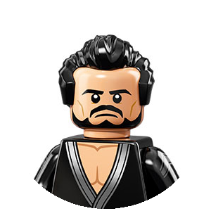

<!DOCTYPE html>
<html lang="en">
<head>
  <!-- Required meta tags -->
  <meta charset="utf-8">
  <meta name="viewport" content="width=device-width, initial-scale=1, shrink-to-fit=no">

  <!-- Bootstrap CSS -->
  <link rel="stylesheet" href="https://maxcdn.bootstrapcdn.com/bootstrap/4.0.0-alpha.6/css/bootstrap.min.css" integrity="sha384-rwoIResjU2yc3z8GV/NPeZWAv56rSmLldC3R/AZzGRnGxQQKnKkoFVhFQhNUwEyJ" crossorigin="anonymous">

  <link rel="stylesheet" href="style.css">

  <!-- Fonts -->
  <link href="https://fonts.googleapis.com/css?family=Fredoka+One" rel="stylesheet">
  <link href="https://fonts.googleapis.com/css?family=Open+Sans" rel="stylesheet">
  <link rel="stylesheet" href="//cdnjs.cloudflare.com/ajax/libs/semantic-ui/2.2.12/semantic.min.css"></link>
  <title>Lego Trader</title>
  <script src="https://js.stripe.com/v3/"></script>
</head>
<body>

  <!-- <div id="header-area">
    <div class="container">
      
    </div>
  </div> -->

  <div id="app"></div>

  <!--Footer starts here-->
  <footer class="page-footer center-on-small-only unique-color-dark pt-0">

      <div id="profile-bg">
          <div class="container">

              <!--Grid row-->
              <div class="w-100 row py-4 d-flex align-items-center text-center">
                <div class="mx-auto d-block">
                  
                  <p class="profile-name"><span>Luna</span><br/>Software Engineer</p>
                </div>

                <div class="mx-auto d-block">
                  
                  <p class="profile-name"><span>Grant</span><br/>Software Engineer</p>
                </div>

                <div class="mx-auto d-block">
                  
                  <p class="profile-name"><span>Patty</span><br/>Scrum Master</p>
                </div>

                <div class="mx-auto d-block">
                  
                  <p class="profile-name"><span>Ralph</span><br/>Product Owner</p>
                </div>
              </div>

            </div>
      </div>

  </footer>
  <!--/.Footer-->


  <!-- jQuery first, then Tether, then Bootstrap JS. -->

  <script type="text/javascript" src="bundle.js"></script>
  <script src="https://code.jquery.com/jquery-3.1.1.slim.min.js" integrity="sha384-A7FZj7v+d/sdmMqp/nOQwliLvUsJfDHW+k9Omg/a/EheAdgtzNs3hpfag6Ed950n" crossorigin="anonymous"></script>
  <script src="https://cdnjs.cloudflare.com/ajax/libs/tether/1.4.0/js/tether.min.js" integrity="sha384-DztdAPBWPRXSA/3eYEEUWrWCy7G5KFbe8fFjk5JAIxUYHKkDx6Qin1DkWx51bBrb" crossorigin="anonymous"></script>
  <script src="https://maxcdn.bootstrapcdn.com/bootstrap/4.0.0-alpha.6/js/bootstrap.min.js" integrity="sha384-vBWWzlZJ8ea9aCX4pEW3rVHjgjt7zpkNpZk+02D9phzyeVkE+jo0ieGizqPLForn" crossorigin="anonymous"></script>
  <script>

  // This is called with the results from from FB.getLoginStatus().
  function statusChangeCallback(response) {
    console.log('statusChangeCallback');
    console.log(response);
    // The response object is returned with a status field that lets the
    // app know the current login status of the person.
    // Full docs on the response object can be found in the documentation
    // for FB.getLoginStatus().
    if (response.status === 'connected') {
      // Logged into your app and Facebook.
      testAPI();
    } else {
      // The person is not logged into your app or we are unable to tell.
      document.getElementById('status').innerHTML = 'Please log ' +
        'into this app.';
    }
  }

  // This function is called when someone finishes with the Login
  // Button.  See the onlogin handler attached to it in the sample
  // code below.
  function checkLoginState() {
    FB.getLoginStatus(function(response) {
      statusChangeCallback(response);
    });
  }

  window.fbAsyncInit = function() {
    FB.init({
      appId      : '{your-app-id}',
      cookie     : true,  // enable cookies to allow the server to access
                          // the session
      xfbml      : true,  // parse social plugins on this page
      version    : 'v2.8' // use graph api version 2.8
    });

    // Now that we've initialized the JavaScript SDK, we call
    // FB.getLoginStatus().  This function gets the state of the
    // person visiting this page and can return one of three states to
    // the callback you provide.  They can be:
    //
    // 1. Logged into your app ('connected')
    // 2. Logged into Facebook, but not your app ('not_authorized')
    // 3. Not logged into Facebook and can't tell if they are logged into
    //    your app or not.
    //
    // These three cases are handled in the callback function.

    FB.getLoginStatus(function(response) {
      statusChangeCallback(response);
    });

  };

  // Load the SDK asynchronously
  (function(d, s, id) {
    var js, fjs = d.getElementsByTagName(s)[0];
    if (d.getElementById(id)) return;
    js = d.createElement(s); js.id = id;
    js.src = "https://connect.facebook.net/en_US/sdk.js";
    fjs.parentNode.insertBefore(js, fjs);
  }(document, 'script', 'facebook-jssdk'));

  // Here we run a very simple test of the Graph API after login is
  // successful.  See statusChangeCallback() for when this call is made.
  function testAPI() {
    console.log('Welcome!  Fetching your information.... ');
    FB.api('/me', function(response) {
      console.log('Successful login for: ' + response.name);
      document.getElementById('status').innerHTML =
        'Thanks for logging in, ' + response.name + '!';
    });
  }
</script>
</body>
</html>